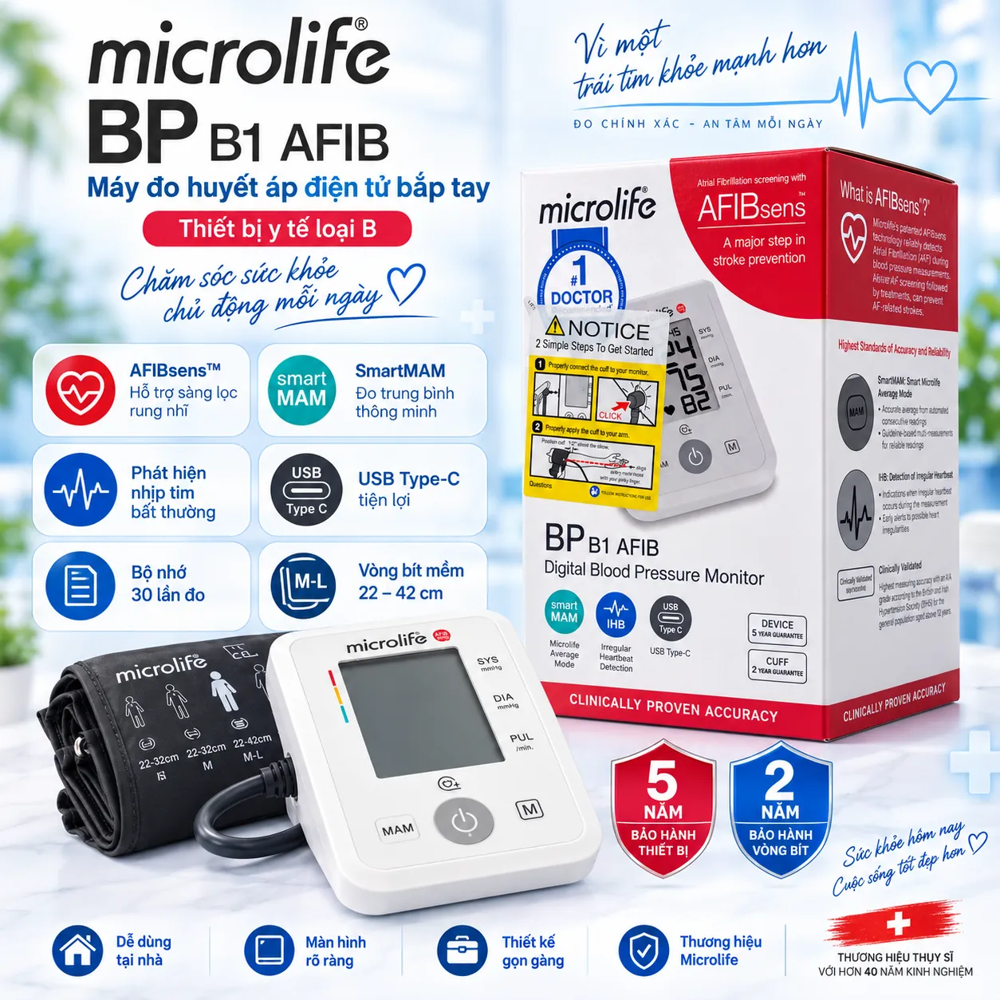

Máy Đo Huyết Áp Điện Tử Bắp Tay Microlife BP B1 AFIB – Công Nghệ AFIBsens, SmartMAM, Phát Hiện Nhịp Tim Bất Thường, USB Type-C
← Tất cả sản phẩmMÁY ĐO HUYẾT ÁP ĐIỆN TỬ BẮP TAY MICROLIFE BP B1 AFIB
Microlife BP B1 AFIB là máy đo huyết áp điện tử bắp tay, phù hợp sử dụng để theo dõi huyết áp và nhịp tim tại nhà. Thiết bị có màn hình hiển thị rõ ràng, thao tác đơn giản và tích hợp nhiều tính năng hỗ trợ quá trình đo.
ĐẶC ĐIỂM NỔI BẬT
• Công nghệ AFIBsens hỗ trợ sàng lọc dấu hiệu rung nhĩ trong quá trình đo.
• SmartMAM hỗ trợ đo nhiều lần và tính giá trị trung bình.
• IHB hỗ trợ nhận biết nhịp tim bất thường trong quá trình đo.
• Bộ nhớ lưu 30 kết quả đo và hỗ trợ hiển thị giá trị trung bình.
• Có chức năng kiểm tra độ vừa của vòng bít.
• Hỗ trợ cảnh báo chuyển động trong khi đo.
• Công nghệ Gentle+ giúp quá trình đo diễn ra nhẹ nhàng và thoải mái hơn.
• Vòng bít bắp tay kích thước khoảng 22–42 cm.
• Trang bị cổng USB Type-C.
• Màn hình lớn, dễ quan sát các chỉ số huyết áp tâm thu, huyết áp tâm trương và nhịp tim.
THÔNG TIN SẢN PHẨM
Thương hiệu: Microlife
Model: BP B1 AFIB
Loại máy: Máy đo huyết áp điện tử bắp tay
Công nghệ: AFIBsens, SmartMAM, IHB
Bộ nhớ: 30 kết quả đo
Kích thước vòng bít: 22–42 cm
Cổng kết nối nguồn: USB Type-C
Bảo hành thiết bị: Theo chính sách và thông tin trên bao bì sản phẩm.
HƯỚNG DẪN SỬ DỤNG CƠ BẢN
Ngồi nghỉ trước khi đo, giữ tư thế thoải mái. Quấn vòng bít đúng vị trí trên bắp tay theo hướng dẫn của nhà sản xuất. Trong quá trình đo nên giữ tay cố định, hạn chế nói chuyện và cử động để kết quả ổn định hơn.
LƯU Ý
Kết quả đo có thể thay đổi tùy theo thời điểm, tư thế và tình trạng của người sử dụng. Sản phẩm dùng để hỗ trợ theo dõi huyết áp tại nhà, không thay thế việc thăm khám, chẩn đoán hoặc tư vấn của nhân viên y tế. Vui lòng đọc kỹ hướng dẫn sử dụng trước khi dùng.
Bộ sản phẩm và mẫu mã thực tế vui lòng tham khảo hình ảnh sản phẩm tại gian hàng.
Lưu ý: Thiết bị hỗ trợ theo dõi tại nhà, không thay thế chẩn đoán của bác sĩ. Kết quả đo có thể thay đổi theo thời điểm và tư thế đo.